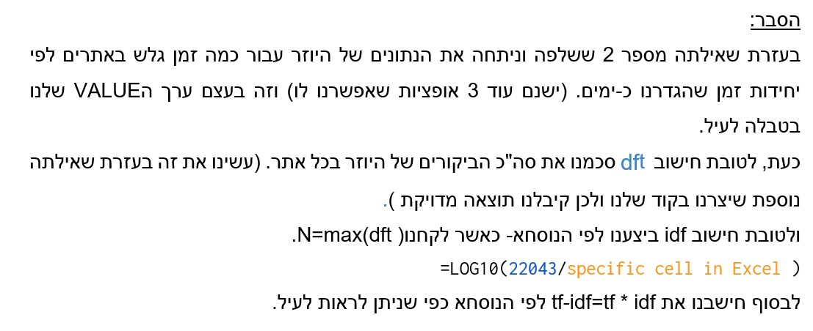

Chrome-browsing-history-analysis-system
האתר בו בחרנו עבור הפרויקט הוא דפדפן כרום, המתפקד כזחלן ברשת האינטרנט.
המידע האישי שהאתר מספק למשתמש בין היתר הוא היסטורית גלישה של משתמש.
האתר מציג את האתרים אליו המשתמש נכנס לפי תאריכים עם לינק לאתר.
תיאור הזחלן
ראשית, המערכת שלנו מציגה חלון ליוזר המציג הוראות המציינות שנדרש לסגור את דפדפן כרום במחשב בו מריצים את המערכת שלנו.לאחר מכן, יש הנחייה ליוזר בעזרת דוגמא לנתיב של התיקיה שאותה הוא יצטרך להעתיק למערכת שלנו.
 לאחר לחיצה על כפתור 2 לדוגמא נוכל לראות כמה אופציות לצפייה של הנתונים שלנו בשעות, בימים, דקות וכו.
לאחר לחיצה על כפתור 2 לדוגמא נוכל לראות כמה אופציות לצפייה של הנתונים שלנו בשעות, בימים, דקות וכו.כל הנתונים מסודרים בתוך גרף שנשמר בתיקיית ההרצה שהקוד שלנו שמור ורץ בה.
דוגמא לגרפים
שאילתות
15 המילים הנפוצות ביותר שהוחזרו
ניתן לראות באילו מהשאילתות שלנו כל אתר מופיע.
פריטים שחזרו משאילתה מספר 2

הרצת השאילתה עבור 2 משתמשים שונים

הדרך בה חשבנו להרחיב את השאילתה היא על ידי חישוב
hub and authority
חישוב זה יסייע לנו למקד לאילו אתרים יש ניקוד יותר גבוהה, כלומר אתרים שיש להם יותר לינקים
ואחרי מיון זה נציג למשתמש אתרים אלו. תחת ההנחה שאלו האתרים המבוקשים.
:הטכנולוגיות בהן השתמשנו בפרויקט הן
על מנת להכין את ממשק המשתמש שיאפשר לנו תצוגה ויזואלית נוחה tinker השתמשנו בספרייה של
בפיתון ושמרנו כל גרף שהופק עם שם משמעותי שנשמר בתיקייה בה היוזר מריץ את המערכת שלנו Plot בנוסף יצרנו גרפים על ידי
matplotlib.pyplot as plt - כדי ליצור מהניתוח ששלפנו גרפים השתמשנו בספריית
היות והיסטוריה של כל משתמש נמצאת בתיקייה סי הנתיב משתנה בין יוזר ליוזר ולכן יצרנו הכוונה של איזה נתיב להכניס למערכת שלנו, מדובר בנתיב מוסתר חלקית אבל הינו קיים למשתמש באם יכניס השדות הללו לתוך תיקייה רגילה שיפתח במחשב וניתן לאתר זאת בקלות רבה
זמני ריצת השאילתות
השאילתות שלנו מתקבלות באופן מידי, בנוסף המהירות תלויה בגודל ההיסטוריה של אותו יוזר. המשתמש לא נדרש להמתין לאף פלט, החישובים שאנחנו עושים עוברים על מספר סופי של נתונים ששלפנו ואנחנו מבצעים פעולות אריתמטיות של סכימה כדי לבצע את הניתוח שלנו